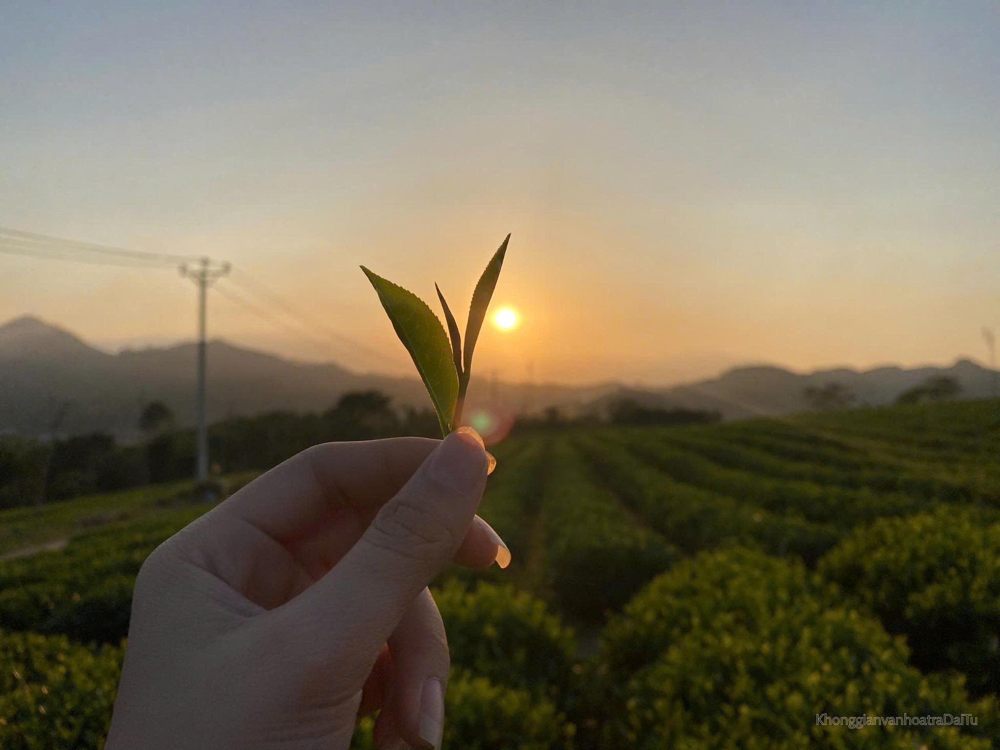

使命
提升茶的价值
老茶馆怀揣着守护越南茶文化精髓的渴望，将国内茶树之美带给国际友人，从而激发人们更加热爱大自然、热爱茶树、热爱本国文化。这就是我们的灵感源泉，也是我们的崇高使命！
“每一杯茶都是关于土地、人民和对遗产的热爱的故事.”

老茶馆怀揣着守护越南茶文化精髓的渴望，将国内茶树之美带给国际友人，从而激发人们更加热爱大自然、热爱茶树、热爱本国文化。这就是我们的灵感源泉，也是我们的崇高使命！
“每一杯茶都是关于土地、人民和对遗产的热爱的故事.”